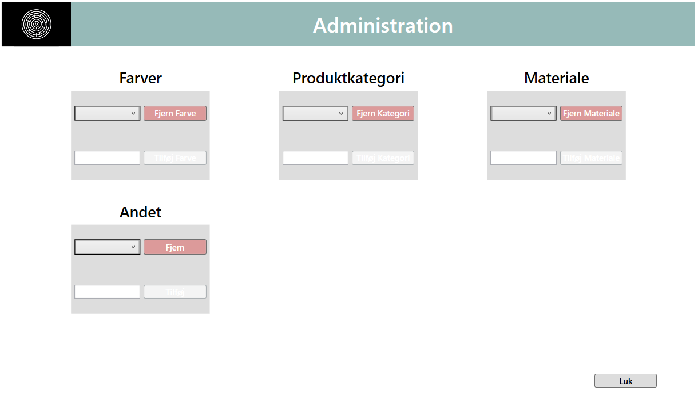
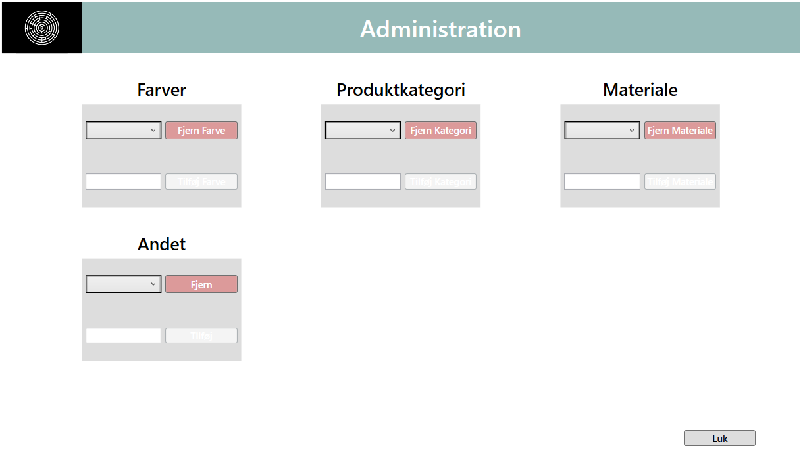

Min rolle
For at stå bedst stillet til min eksamen, deltog jeg i stort set alle projektets områder. Hovedsagligt indebar det projektstyring, virksomhedanalyse, udarbejdelse af systemdokumentaion(UML), implementering og testning af usecases. Samt vedligholdelse af feedback gennem kontakt til product owner.
Værktøjer & Teknologier
C#
Visual Studio
WPF(XAML)
SQL datbase
Unit Testing
MVVM arkitektur
Adobe XD
Trello
Visio
Bemærkelsesværdige features
CRUD funktioner til produkter
Sortering/filtreing af lageroversigt
Tilføj/Fjern filteringsmuligheder
Hente/sende information via SQL database
Responsivt UI design
 
